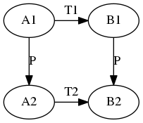

线性代数
Table of Contents
Symbols
- V : Vector space
- F : stands for either R or C.
- R : Real numbers
- C : Complex numbers
Concepts
线性关系(linear relation): 源于一个很朴素的想法,如果x,y是线性关系,那么x增大或者缩小n倍,那么 y也应该增大或缩小n倍, 如果x1对应于y1, x2对应于y2, 那么x1+x2对应于y1+y2, 用 数学语言表述就是:
F(a * x1) = a * F(x1) a是常数 F(x1 + x2) = F(x1) + F(x2)
- 线性操作(linear operation): 对 y=F(x) 而言, 我们可以这样看,x是输入, F是操 作, 将 F 作用与输入 x 上得到输出y, 如果F是线性操作,那么y与x就成线性关系. 很显然F应该是一个乘以常数的操作, 因为只有y=ax时, y与x才是线性关系.实际上我 们可以推广到多维的情况y=a1x1+a2x2+a3x3, 那么y与(x1, x2, x3)^T 是线性关系, 那 么(a1, a2, a3) 就是线性操作
- 逆矩阵(非奇异矩阵)
- 投影矩阵
相似矩阵
\begin{equation*} T_1 = P^{-1}T_2P \end{equation*}相似矩阵描述的实际是同一个线性变换在不同的基下面的表示

T1是坐标系 I下的变换，而T2是坐标系P下面的变换, 依次将 \(P,T2,P^{-1}\) 应用到A就会得到B。
- 向量空间(\(V\)): 一个在 加法 以及 标量乘法 上 闭合 的集合, 并且该集合
要满足以下性质:
- 交换律: 对所有的 \(u, v \in V\) 都有 \(u+v = v+u\).
- 结合律: 对所有的 \(u, v, w \in V\) 都有 \((u+v) + w = u + (v+w)\)
- 加法单位元: 存在一个元素 \(0 \in V\), 使得对所有的 \(v \in V\) 都有 \(v+0=v\)
- 加法逆: 对所有的 \(v \in V\), 都存在 \(w \in V\) 使得 \(v + w = 0\).
- 乘法单位元: 对所有的 \(v \in V\), 都有 \(1v = v\).
- 分配性质: 对所有的 \(a, b \in F, u,v \in V\) 都有 \(a(u+v) = au+av, (a+b)u = au + bu\)
- 子空间(\(U\)): \(U\) 是 \(V\) 的子空间, 那么意味着: \(U \subseteq V\), 且在加法以及标
量乘法上闭合:
- \(0 \in U\)
- if \(u, v \in U\) then \(u+v \in U\)
- if \(a \in F, u \in U\) then \(au \in U\)
线性方程组
高斯-若尔当消元法
通过高斯消元法来将A变换为I，这样就得到了A的逆。
置换矩阵
这些矩阵可以用来交换矩阵的行, 重要性质： \(AA^T=I\)
矩阵
矩阵的乘法
单元素
乘积的第i行第j个元素是A的第i行乘以B的第j行。
\begin{equation*} c_{ij} = \sum_{k=1}^k a_{ik}b_{kj} \end{equation*}行的线性组合
所以对于 AB=C 可以这样理解： C的每一行都是A的对应行乘以B，所以A的第一行作为 系数对B的每一行做线性组合的得到C的第一行，其他的行依次类推
列的线性组合
所以对于 AB=C 可以这样理解： C的每一列都是A乘以B的对应列，所以B的第一列作为 系数对A的每一列做线性组合的得到C的第一列，其他的列依次类推
分块矩阵
可以从分块矩阵的角度理解矩阵乘法, 规则和单元素时很类似，也是行乘以列
\begin{equation*} \begin{bmatrix} A_{11} A_{12} \\ A_{21} A_{22} \end{bmatrix} \begin{bmatrix} B_{11} \\ B_{21} \end{bmatrix} = \begin{bmatrix}A_{11}B_{11} + A_{12}B_{21} \\ A_{21}B_{11} + A_{22}B_{21} \end{bmatrix} \end{equation*}向量空间
四个子空间
正交
投影与最小二乘
投影矩阵是下面的公式
\begin{equation*} P = A(A^TA)^{-1}A^T \end{equation*}因为A很多时候是不可逆的比如A不是方阵，所以 \((A^TA)^{-1}\) 是不能进一步化简的， 如果A可逆，那么最终的结果就是 I,也就是说投影是它自身，这是符合几何上的直觉的.同 时上面的公式有一个前提就是 \(A^TA\) 必须是可逆的，可以证明只要A的列向量是线性无 关的，那么就是可逆的,证明如下：
\begin{equation*} (A^TA)x = 0 \\ x^T(A^TA)x = 0 \\ (Ax)^TAx = 0 \\ Ax = 0 \end{equation*}证明的思路就是：一个矩阵可逆也就意味它的线性齐次方程组只有零解，最重要的一步是方程两边乘以 \(x^T\)
如果A的列向量是标准正交的，那么
\begin{equation*} P = AA^T \end{equation*}行列式
几何性质
- 二维时是2个矩阵列向量组成的平行四边形的面积
- 三维时是3个矩阵列向量组成的立方体的体积
- 高维你可以想象成某种高维体积
很多行列式的性质都可以从几何上获得直观的解释。
Property
- \(det(I) = 1\)
- 交换两行，那么行列式的值变号
- \begin{eqnarray*} \begin{vmatrix} ta & tb \\ c & d \end{vmatrix} & = & t \begin{vmatrix} a & b \\ c & d \end{vmatrix} \\ \begin{vmatrix} a + a' & b+b' \\ c & d \end{vmatrix} & = & \begin{vmatrix} a & b \\ c & d \end{vmatrix} + \begin{vmatrix} a' & b' \\ c & d \end{vmatrix} \end{eqnarray*}
- 三角矩阵行列式等于对角线上元素的乘积.
- \(det(AB)=det(A)det(B)\)
- \(det(A^T)=det(A)\)
计算方法
- 将矩阵行归约成梯形形式，主元的乘积就是行列式(三角矩阵的行列式等于对角线元素的 乘积), 如果交换了行，那么要添加适当的正负号.(计算机使用这种方法计算行列式)
- n! 个项的加法(\(a_{1\alpha}, a_{2\beta}, a_{3\gamma}, ... a_{n\omega}\)), 从每 一行每一列中取一个元素,也就是说 \(\alpha, \beta, \gamma ... \omega\) 必须不一样。
- 代数余子式: 某一行(列) 的元素乘以其对应的代数余子式然后相加。
- 余子式：\(M_{ij}\) 是指去掉第i行以及第j列后的矩阵组成的行列式
- 代数余子式: \(C_{ij} = (-1)^{i+j}M_{ij}\)
克拉默法则
- 逆矩阵： \(A^{-1} = \frac{1}{det(A)} C^T\) , 其中C是代数余子式组成的矩阵。
克拉默法则： 求解 \(Ax=b\).
\begin{equation*} \begin{bmatrix} x_1 \\ x_2 \\ \vdots \\ x_n \end{bmatrix} = \frac{1}{det(A)}\begin{bmatrix} det(B_1) \\ det(B_2) \\ \vdots \\ det(B_n) \end{bmatrix} \end{equation*}其中 \(B_n\) 是A的第n列替换为b后得到的。
特征值与特征向量
特征值和特征向量只对方阵有意义，主要是用来简化计算的，通过将任意的向量向特征向量 的方向做分解可以大大的简化计算
Definition
x就是特征向量,\(\lambda\) 就是特征值, 他们可以使用下式来计算
\begin{equation*} det(A-\lambda I) = 0 \end{equation*}这个式子就是特征方程, 也就是说 \(A-\lambda I\) 的列必须时线性相关的，那么如果A是一 个三角矩阵那么特征值就是A对角线上的元素。
\begin{equation*} S^{-1}AS = \Lambda A^n = S \Lambda^n S^{-1} \end{equation*}\(S\) 是A的特征向量组成的矩阵， \(\Lambda\) 是特征值组成的对角矩阵。